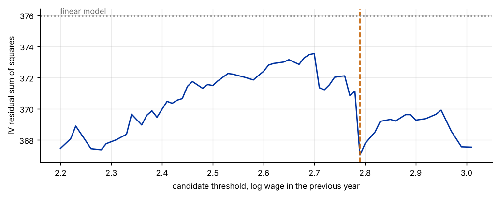

Step 1The question and the model
Does the response of working hours to the wage differ between low-wage and high-wage women? A linear model gives one elasticity. A threshold model lets the elasticity change when a variable crosses a value. Hours are persistent, so last year's hours belong in the model, and then fixed effects estimated by the within transformation are biased. Our question is: is there a wage level below which hours respond to wage changes differently, and where is it?
The threshold variable is last year's log wage, so it is determined before the shock \(\varepsilon_{it}\). First-differencing removes \(\mu_i\); the lagged change \(\Delta h_{i,t-1}\) is correlated with \(\Delta\varepsilon_{it}\), so it is instrumented with the levels \(h_{i,t-2}\) and \(h_{i,t-3}\).
| Symbol | Variable in the file | Definition |
|---|---|---|
| \(h_{it}\) | lnhr |
log annual hours worked |
| \(w_{it}\) | lnwg |
log hourly wage |
| \(kids_{it}\) | kids |
number of children |
| \(\gamma\) | threshold to be estimated, in log wage |
Before you estimate anything
Decide how you treat the regressors. Here the wage change is treated as exogenous in the differenced equation, which is a strong assumption (wages may respond to hours, and are measured with error). The last step relaxes it and shows what changes. Also decide the threshold variable on theory, and keep at least 15% of the observations in each regime.
How to write it: model section
We estimate a dynamic panel threshold model for annual hours. The model is differenced to remove individual effects, the lagged change in hours is instrumented with its second and third lags in levels, and the regime is defined by the lagged log wage. We choose the threshold by minimising the instrumental-variable residual sum of squares over a grid of the 15th to 85th percentiles of the threshold variable, test for its existence with a fixed-regressor wild bootstrap clustered by individual, and report cluster-robust standard errors for the slopes.
Step 2Load the data and see the Nickell bias
import warnings; warnings.filterwarnings("ignore")
import numpy as np, pandas as pd
import matplotlib.pyplot as plt
import statsmodels.api as sm
d = pd.read_csv("laborsupply.csv").sort_values(["id", "year"]).reset_index(drop=True)
N = d.id.nunique(); T = d.groupby("id").size().iloc[0]
print(f"{N} women, {T} years each ({d.year.min()}-{d.year.max()}), {len(d)} observations")
print(d[["lnhr", "lnwg", "kids"]].describe().round(2).loc[["mean", "std", "min", "max"]].T)
g = d.groupby("id")
for v in ["lnhr", "lnwg", "kids"]:
for L in (1, 2, 3):
d[f"{v}_l{L}"] = g[v].shift(L)
d["dh"] = d.lnhr - d.lnhr_l1; d["dh_l1"] = d.lnhr_l1 - d.lnhr_l2
d["dw"] = d.lnwg - d.lnwg_l1; d["dk"] = d.kids - d.kids_l1
d["q"] = d.lnwg_l1 # threshold variable, known at t-1
use = d.dropna(subset=["dh", "dh_l1", "dw", "dk", "lnhr_l2", "lnhr_l3"]).copy()
ids = pd.factorize(use.id)[0]
yrs = pd.get_dummies(use.year, drop_first=True).astype(float).values
print(f"\nObservations after differencing and lags: {len(use)} ({use.id.nunique()} women)")
# the lagged-dependent-variable coefficient in a static-style estimator
dd = d.dropna(subset=["lnhr_l1"])
ols = sm.OLS(dd.lnhr, sm.add_constant(dd[["lnhr_l1"]])).fit().params["lnhr_l1"]
dm = lambda s: s - s.groupby(dd.id).transform("mean")
fe = (dm(dd.lnhr_l1) @ dm(dd.lnhr)) / (dm(dd.lnhr_l1) @ dm(dd.lnhr_l1))
def tsls(y, X, Z):
Xh = Z @ (np.linalg.pinv(Z.T @ Z) @ (Z.T @ X)) # first-stage fitted values
b = np.linalg.solve(Xh.T @ X, Xh.T @ y); return b, y - X @ b
y = use.dh.values
Xl = np.column_stack([use.dh_l1, use.dw, use.dk, yrs]); Zl = np.column_stack([use.lnhr_l2, use.lnhr_l3, use.dw, use.dk, yrs])
iv = tsls(y, Xl, Zl)[0][0]
print(f"\nCoefficient on lagged hours: pooled OLS {ols:.3f} | within FE {fe:.3f} | first-difference IV {iv:.3f}")532 women, 10 years each (1979-1988), 5320 observations
mean std min max
lnhr 7.66 0.29 2.77 8.56
lnwg 2.61 0.43 -0.26 4.69
kids 1.56 1.20 0.00 6.00
Observations after differencing and lags: 3724 (532 women)
Coefficient on lagged hours: pooled OLS 0.476 | within FE 0.122 | first-difference IV 0.149How to read it
The panel has 532 women observed for ten years (5,320 observations), and 3,724 observations remain after differencing and losing the first lags. Log hours are persistent but the estimates of that persistence depend strongly on the estimator: the coefficient on lagged hours is 0.48 in pooled OLS, 0.12 with the within (fixed-effects) estimator and 0.15 with the first-difference IV estimator. Pooled OLS is biased upward because the individual effect is in the error and in the lag. The within estimator is biased downward in short panels (the Nickell bias), and the IV estimator removes the effect by differencing and uses lagged levels as instruments. This is why a dynamic threshold model needs the IV approach.
Step 3Search for the threshold
q = use.q.values; K = use[["dk"]].values; X0 = use[["dh_l1"]].values
Xx = use[["dw"]].values; Zn = use[["lnhr_l2", "lnhr_l3"]].values
def fit(gam, y_=None):
lo = (q <= gam).astype(float)[:, None]; hi = 1 - lo
X = np.hstack([X0, Xx * lo, Xx * hi, K, yrs]); Z = np.hstack([Zn, Xx * lo, Xx * hi, K, yrs])
b, e = tsls(y if y_ is None else y_, X, Z); return b, e, X, Z
trim = .15
grid = np.unique(np.quantile(q, np.linspace(trim, 1 - trim, 71)))
ssr = np.array([(lambda r: r[1] @ r[1])(fit(gm)) for gm in grid])
k = int(np.argmin(ssr)); gam = grid[k]
b_lin, e_lin = tsls(y, Xl, Zl); ssr0 = e_lin @ e_lin
print(f"Threshold estimate: {gam:.3f} in log wage (a wage of about {np.exp(gam):.1f} per hour in the units of the data)")
print(f"Share of observations with lagged log wage at or below it: {(q <= gam).mean():.1%}")
print(f"IV sum of squared residuals: linear {ssr0:.2f}, threshold model {ssr[k]:.2f}")
fig, ax = plt.subplots(figsize=(8, 3.2))
ax.plot(grid, ssr, color="#0033a0"); ax.axvline(gam, color="#c46000", ls="--"); ax.axhline(ssr0, color="#888", ls=":")
ax.set_xlabel("candidate threshold, log wage in the previous year"); ax.set_ylabel("IV residual sum of squares")
ax.annotate("linear model", (grid[0], ssr0), va="bottom", color="#666")
plt.tight_layout()Threshold estimate: 2.790 in log wage (a wage of about 16.3 per hour in the units of the data) Share of observations with lagged log wage at or below it: 69.5% IV sum of squared residuals: linear 375.97, threshold model 367.04

How to read it
The grid search picks a threshold of 2.79 in log wage (a wage of about 16.3 per hour in the units of the data), with 69.5% of the observations at or below it. The IV residual sum of squares falls from 375.97 in the linear model to 367.04. The figure shows that the threshold is not sharply located. Every candidate has a smaller SSR than the linear model, but the curve is jagged, is lowest at the two ends (around 2.2–2.3 and above 2.9) and has a sharp dip at the chosen value 2.79, which a few observations can produce. Read the grid search together with the test and the interval in the next step.
Step 4Is there a threshold? A bootstrap test
rng = np.random.default_rng(21)
sig2 = ssr[k] / (len(y) - 8)
F_obs = (ssr0 - ssr[k]) / sig2
fitted_lin = Xl @ b_lin
G = ids.max() + 1; Fb = []
for _ in range(199):
w = rng.choice([-1.0, 1.0], G)[ids] # one sign per woman keeps the serial correlation of the errors
ys = fitted_lin + e_lin * w
s0 = (lambda r: r[1] @ r[1])(tsls(ys, Xl, Zl))
s1 = min((lambda r: r[1] @ r[1])(fit(gm, ys)) for gm in grid)
Fb.append((s0 - s1) / (s1 / (len(ys) - 8)))
Fb = np.array(Fb)
print(f"Test statistic F = (SSR_linear - SSR_threshold)/sigma2 = {F_obs:.2f}")
print(f"Bootstrap 90th, 95th, 99th percentiles of F under no threshold: {np.percentile(Fb, [90, 95, 99]).round(2)}")
print(f"Bootstrap p-value (199 draws, fixed regressors, wild by woman): {(Fb >= F_obs).mean():.3f}")
# approximate confidence interval for the threshold: values whose likelihood-ratio statistic is below 7.35 (Hansen, 95%)
LR = (ssr - ssr[k]) / sig2
ok = grid[LR <= 7.35]
print(f"Approximate 95% interval for the threshold: [{ok.min():.2f}, {ok.max():.2f}] in log wage, i.e. {np.exp(ok.min()):.1f} to {np.exp(ok.max()):.1f} per hour")Test statistic F = (SSR_linear - SSR_threshold)/sigma2 = 90.44 Bootstrap 90th, 95th, 99th percentiles of F under no threshold: [43.69 55.69 71.25] Bootstrap p-value (199 draws, fixed regressors, wild by woman): 0.005 Approximate 95% interval for the threshold: [2.20, 3.01] in log wage, i.e. 9.0 to 20.3 per hour
How to read it
The test of a threshold against a linear model gives F = 90.4. The wild bootstrap by woman, with the same search over the grid in every draw, gives a 95th percentile of 55.7 and a 99th percentile of 71.3, so the bootstrap p-value is 0.005 (one draw in 199 exceeds the statistic). We reject the linear model: the wage response differs by regime. The location is a different matter. The approximate 95% interval is 2.20 to 3.01 in log wage, which is almost the whole 15th–85th percentile range of the grid. The data say that there is a threshold effect, but not where it is. The interval comes from the likelihood-ratio rule for iid errors, and with differenced data it is approximate.
Step 5Slopes by regime, with diagnostics
b, e, X, Z = fit(gam)
names = ["lagged hours (change)", "wage, low regime", "wage, high regime", "children (change)"]
Xh = Z @ (np.linalg.pinv(Z.T @ Z) @ (Z.T @ X))
A = np.linalg.inv(Xh.T @ Xh); S = np.zeros((X.shape[1],) * 2)
for i in range(G):
s = Xh[ids == i].T @ e[ids == i]; S += np.outer(s, s)
V = A @ S @ A * G / (G - 1)
se = np.sqrt(np.diag(V))[:4]
tab = pd.DataFrame({"coef": b[:4], "cluster s.e.": se, "t": b[:4] / se}, index=names)
print(tab.round(3).to_string())
dv = np.array([1, -1]) @ np.array([[V[1, 1], V[1, 2]], [V[2, 1], V[2, 2]]]) @ np.array([1, -1])
print(f"\nDifference between regimes: {b[1] - b[2]:.3f} (s.e. {np.sqrt(dv):.3f}, t = {(b[1] - b[2]) / np.sqrt(dv):.2f})")
# AR(2) test on the differenced residuals and a robust Hansen J test of the two lagged-level instruments
df_ = use[["id", "year"]].copy(); df_["e"] = e
df_["e2"] = df_.groupby("id").e.shift(2)
m = df_.dropna()
ar2 = (m.e * m.e2).sum() / np.sqrt(((m.e * m.e2) ** 2).sum() + 0)
gi = np.array([Zn[ids == i].T @ e[ids == i] for i in range(G)])
Jv = gi.sum(0) @ np.linalg.inv(gi.T @ gi) @ gi.sum(0)
from scipy import stats
print(f"AR(2) statistic {ar2:.2f} (p = {2 * stats.norm.sf(abs(ar2)):.3f}); Hansen J = {Jv:.2f}, p = {stats.chi2.sf(Jv, 1):.3f} (1 degree of freedom)")coef cluster s.e. t lagged hours (change) 0.136 0.151 0.898 wage, low regime 0.203 0.114 1.784 wage, high regime -0.193 0.090 -2.147 children (change) -0.013 0.012 -1.138 Difference between regimes: 0.396 (s.e. 0.148, t = 2.67) AR(2) statistic -0.17 (p = 0.869); Hansen J = 5.98, p = 0.014 (1 degree of freedom)
How to read it
In the low-wage regime a 10% rise in the wage raises hours by about 2.0% (coefficient 0.203, cluster standard error 0.114, t = 1.78). In the high-wage regime the response is negative (−0.193, s.e. 0.090, t = −2.15), as in a backward-bending labour supply curve where the income effect dominates. The two slopes differ by 0.396 (s.e. 0.148, t = 2.67). The coefficient on lagged hours (0.136) and on children (−0.013) are not significant. The AR(2) statistic is −0.17 (p = 0.87), so there is no second-order serial correlation in the differenced residuals, as required. The Hansen J test rejects (J = 5.98, p = 0.014) with one degree of freedom, which means that the second and third lags of hours are not both valid instruments here. Report this and treat the point estimates with caution.
How to write it: results
We estimate a dynamic threshold model of annual hours for 532 women over 1979–1988, with the lagged log wage as the threshold variable. A bootstrap test rejects a linear model (F = 90.4, p = 0.005). The threshold estimate is 2.79 in log wage, but the approximate 95% interval of 2.20 to 3.01 shows that its location is imprecise. Below the threshold the wage elasticity of hours is 0.20 (cluster s.e. 0.11), above it is −0.19 (s.e. 0.09), and the difference is significant (t = 2.67). The Hansen J test rejects the over-identifying restriction (p = 0.014), so we interpret the regime difference as suggestive and show robustness to trimming, to other threshold variables and to treating wages as predetermined.
Step 6Robustness: trimming, the threshold variable and the instruments
def run(qvar, trim_, zx_pred=False):
qq = qvar; grid_ = np.unique(np.quantile(qq, np.linspace(trim_, 1 - trim_, 71))); out = []
for gm in grid_:
lo = (qq <= gm).astype(float)[:, None]; hi = 1 - lo
X = np.hstack([X0, Xx * lo, Xx * hi, K, yrs])
Zx = (use[["lnwg_l2"]].values * lo, use[["lnwg_l2"]].values * hi) if zx_pred else (Xx * lo, Xx * hi)
Z = np.hstack([Zn, *Zx, K, yrs]); bb, ee = tsls(y, X, Z); out.append((ee @ ee, gm, bb[1], bb[2]))
r = min(out); return r, np.array([o[0] for o in out])
rows = []
for lab, qv, tr, zp in [("baseline: lagged wage, 15% trim", q, .15, False), ("10% trim", q, .10, False), ("20% trim", q, .20, False),
("threshold: lagged hours", use.lnhr_l1.values, .15, False), ("threshold: number of children", use.kids_l1.values, .15, False),
("wage treated as predetermined (instrument: second lag)", q, .15, True)]:
try:
(s_, gm_, b1, b2), path = run(qv, tr, zp)
rows.append((lab, gm_, (qv <= gm_).mean(), b1, b2, path.max() / path.min()))
except Exception as ex:
rows.append((lab, np.nan, np.nan, np.nan, np.nan, np.nan))
print(pd.DataFrame(rows, columns=["specification", "threshold", "share below", "slope below", "slope above", "max/min SSR on grid"]).round(2).to_string(index=False)) specification threshold share below slope below slope above max/min SSR on grid
baseline: lagged wage, 15% trim 2.79 0.69 0.20 -0.19 1.02
10% trim 2.07 0.10 0.37 -0.01 1.02
20% trim 2.79 0.69 0.20 -0.19 1.02
threshold: lagged hours 7.53 0.16 0.52 -0.11 1.05
threshold: number of children 2.00 0.79 -0.04 0.45 1.08
wage treated as predetermined (instrument: second lag) 2.20 0.15 0.30 0.18 3.06How to read it
The sign pattern is stable in the first three rows, where the wage is the threshold variable and only the trimming changes: the slope is positive below the threshold and negative or near zero above it. The location is not. Trimming 10% gives a threshold of 2.07 with 10% of the sample below it, and trimming 15% or 20% gives 2.79 with 69% below, so the estimated threshold jumps between two places. With the number of children as the threshold variable the pattern reverses (−0.04 below, 0.45 above). Treating the wage as predetermined (instrumented by its second lag, last row) gives a threshold of 2.20 with 15% below and slopes of 0.30 and 0.18, and the SSR on the grid varies by a factor of three, a sign of weak instruments. The robust conclusion is that the linear model is rejected and that the effect is heterogeneous. The exact threshold and the size of the high-regime slope depend on choices that the data cannot settle, and a paper should say so.
Step 7What to report in the paper
| Item | What to show |
|---|---|
| Transformation | first differences (or forward orthogonal deviations) and why the within estimator is not used |
| Instruments | which lags, how many, and the Hansen J test |
| Threshold variable | why it is predetermined, and the trimming |
| Test | the bootstrap design, the number of draws and the p-value |
| Threshold | the estimate and an interval, and the share of observations in each regime |
| Slopes | coefficients by regime with cluster-robust standard errors and the test of equality |
| Robustness | trimming, other threshold variables, and the exogeneity assumption on the regressors |
Common mistakes
- Using a static threshold estimator with a lagged dependent variable. The within transformation is biased in short panels (Nickell), and so is the threshold search.
- Using an endogenous threshold variable. The indicator must be determined before the error. Lag it.
- Reading the chi-square or LR interval as exact. With differenced, instrumented data the interval is approximate. Present it as a guide and check it with the bootstrap.
- Weak or too many instruments. With many regimes the instruments are split. Check how smooth the SSR path is and report the Hansen J test.
- Ignoring the exogeneity assumption on the regressors. Show a specification that treats them as predetermined, as in the last step.
- Interpreting the threshold as a causal tipping point. It is a statistical break in the slope, and it may move with the sample.